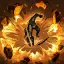
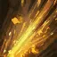
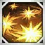
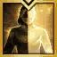

Builds
Skills/Runes
Gems
Rotations
Tips and tricks
So far in all my testing blunt thorn is far superior than anything else in the final row
However i will put out 2 different builds for those that do not like seeing white numbers
Eye of the storm: 3/2/2 Rune: Epic galewind
Zaffre nova: 1/1/1 (higher damage) 1/1/2 (faster identity) Rune: Epic galewind
Spiral uppercut: 1/3/1 Rune: Leg Judgement
Explosive fist: 1/3/1 Rune: Leg galewind
Haymaker(counter): 1/2 Rune: Epic quick recharge
Brawl king's advance: 2/1/2 Rune: Leg quick recharge
 Falling star: 3/2/2 Rune: Leg galewind
 Crater strike(counter): 2/2/1 Rune: Leg Conviction
 T skill: Heavenly King's War Dance (can opt to other one when we get bracelets from brel)
 Awakening: Butterfly sting (used to refill identity instantly)
Depending on what skills/tripods you opt to using, the gems and gemprios are different
For instance if you play Zaffre nova 1/1/1 or 1/1/2 you either want both dmg/cd gem or only cd gem
Dmg: Identity, Eye of the storm, Explosive fist, Falling star, Spiral uppercut, (replace falling star damage with zaffre nova damage if playing 1/1/1 Zaffre nova)
Cd: Brawl king's advance, Eye of the storm, Explosive fist, Falling star, Spiral uppercut, Zaffre nova
Priority from left to right
There are not really any big prios other than Eye of the storm and epxlosive fist (Zaffre nova if playing 1/1/1), but you allways have to rotate stamina and shock skills. In reality the only difficult part about asura is front attacking.
With ark passive you no longer sequence break
You can use falling star from behind the boss to reposition to front and hit it as front attack (will put in a video of this)